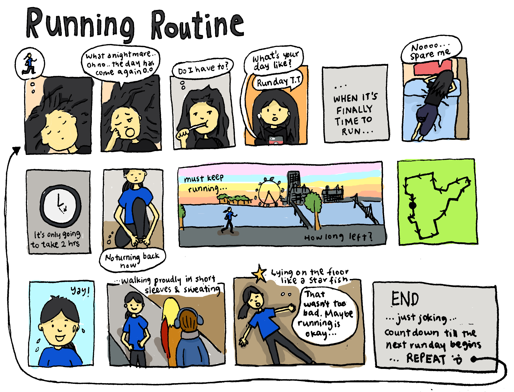
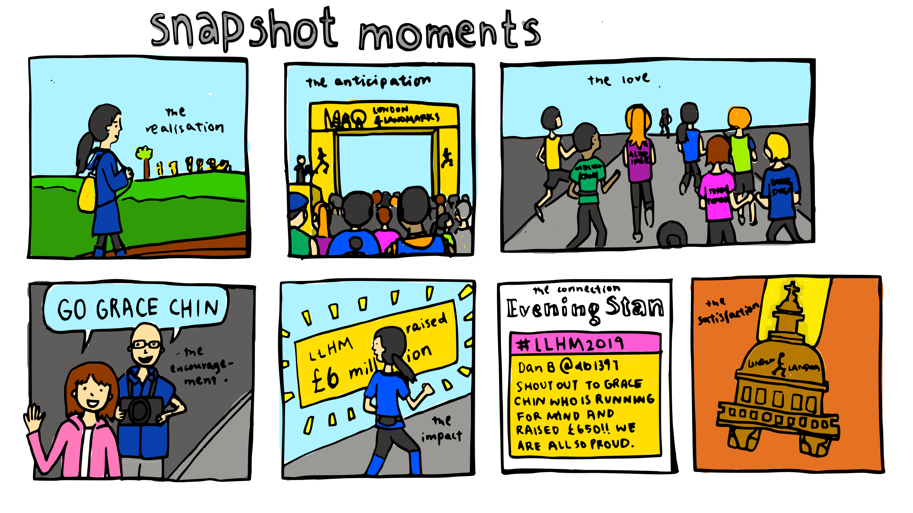

Half Marathon
running for Mind
-
2019
Approx. 6 months
Personal Project
Credits to Peter Bartley for taking these lovely photos and making the video
Virgin Money Giving Fundraising site raised above £600
Running Facebook blog page - "Grace's running & crying"

Progress of the running was recorded with drawings, photos, and posts in the Facebook blog page - Grace's running & crying. I hoped to capture moments, thoughts, and emotions of the training and running with my friends and family to entertain them and make them feel a part of the entire process.

×


×


×


×


×


×


×


×


×